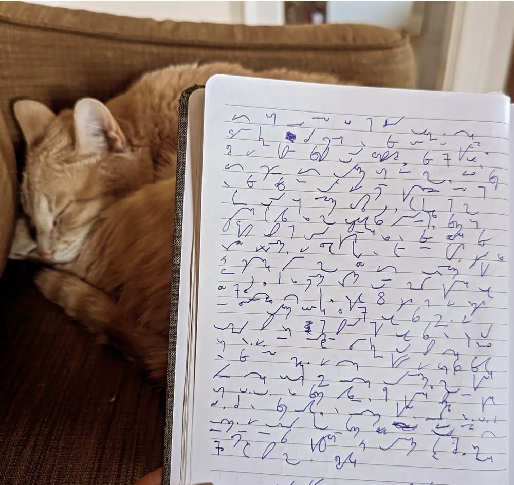

Shorthand Writing
Unrelated to computers/programming/art in general but another one of my hobbies is writing and practicing shorthand.
it's a completely useless and outdated skill but I find it very fun and I love the way it looks. Ever since I was little I've always loved codes and cyphers and I guess this
reminds me of that in some regards. I'm fairly fast at writing it but reading it back takes me a bit to decode it, I have to think about it more than when I write it.

The idea behind shorthand writing is to be able to jot notes as quick as people speak. This particular model [called teeline] was developed for journalists back before audio recording devices became common place. Which was a while ago now so it's BEEN an outdated skill for a long time lol.